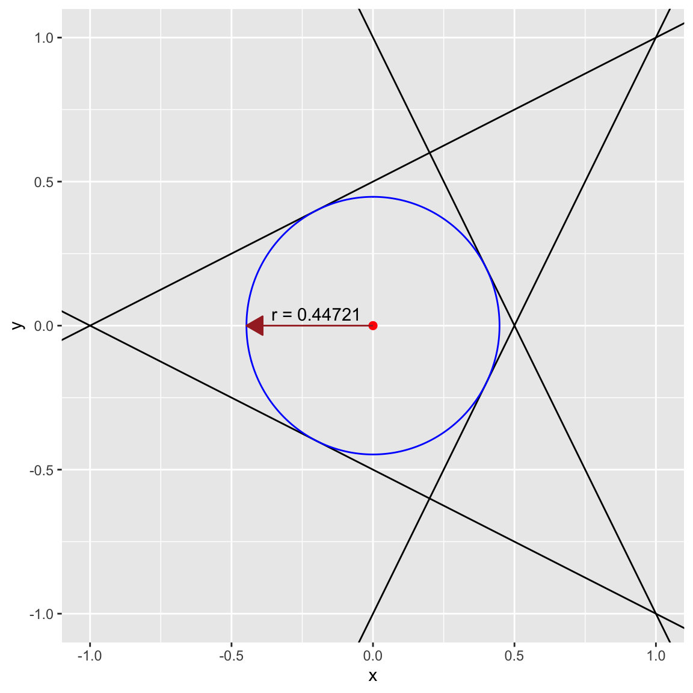

Largest Ball in a Polyhedron in 2D
Problem
The following is a problem from Boyd and Vandenberghe (2004), section 4.3.1.
Find the largest Euclidean ball (i.e. its center and radius) that lies in a polyhedron described by affine inequalites:
\[ P = {x : a_i'*x <= b_i, i=1,...,m} \]
where x is in \({\mathbf R}^2\).
We define variables that determine the polyhedron.
a1 <- matrix(c(2,1))
a2 <- matrix(c(2,-1))
a3 <- matrix(c(-1,2))
a4 <- matrix(c(-1,-2))
b <- rep(1,4)Next, we formulate the CVXR problem.
r <- Variable(name = "radius")
x_c <- Variable(2, name = "center")
obj <- Maximize(r)
constraints <- list(
t(a1) %*% x_c + p_norm(a1, 2) * r <= b[1],
t(a2) %*% x_c + p_norm(a2, 2) * r <= b[2],
t(a3) %*% x_c + p_norm(a3, 2) * r <= b[3],
t(a4) %*% x_c + p_norm(a4, 2) * r <= b[4]
)
p <- Problem(obj, constraints)All that remains is to solve the problem and read off the solution.
result <- solve(p)
radius <- result$getValue(r)
center <- result$getValue(x_c)
cat(sprintf("The radius is %0.5f for an area %0.5f\n", radius, pi * radius^2)) ## The radius is 0.44721 for an area 0.62832A Plot
ggplot() +
geom_abline(slope = -a1[1] / a1[2], intercept = b[1] / a1[2]) +
geom_abline(slope = -a2[1] / a2[2], intercept = b[2] / a2[2]) +
geom_abline(slope = -a3[1] / a3[2], intercept = b[3] / a3[2]) +
geom_abline(slope = -a4[1] / a4[2], intercept = b[4] / a4[2]) +
geom_circle(mapping = aes(x0 = center[1], y0 = center[2], r = radius), color = "blue") +
geom_point(mapping = aes(x = center[1], y = center[2]), color = "red", size = 2) +
geom_line(mapping = aes(x = c(center[1], center[1] - radius), y = c(center[2], center[2])),
arrow = arrow(length = unit(0.03, "npc"), ends = "first", type = "closed"),
color = "brown") +
annotate("text", x = -0.2, y = 0.04, label = sprintf("r = %0.5f", radius)) +
labs(x = "x", y = "y") +
xlim(-1, 1) + ylim(-1, 1)
Session Info
sessionInfo()## R version 4.4.0 (2024-04-24)
## Platform: x86_64-apple-darwin23.4.0
## Running under: macOS Sonoma 14.5
##
## Matrix products: default
## BLAS: /usr/local/Cellar/openblas/0.3.27/lib/libopenblasp-r0.3.27.dylib
## LAPACK: /usr/local/Cellar/r/4.4.0_1/lib/R/lib/libRlapack.dylib; LAPACK version 3.12.0
##
## locale:
## [1] en_US.UTF-8/en_US.UTF-8/en_US.UTF-8/C/en_US.UTF-8/en_US.UTF-8
##
## time zone: America/Los_Angeles
## tzcode source: internal
##
## attached base packages:
## [1] stats graphics grDevices datasets utils methods base
##
## other attached packages:
## [1] ggforce_0.4.2 ggplot2_3.5.1 CVXR_1.0-13
##
## loaded via a namespace (and not attached):
## [1] gmp_0.7-4 sass_0.4.9 utf8_1.2.4 generics_0.1.3
## [5] slam_0.1-50 blogdown_1.19 lattice_0.22-6 digest_0.6.35
## [9] magrittr_2.0.3 evaluate_0.23 grid_4.4.0 bookdown_0.39
## [13] fastmap_1.2.0 jsonlite_1.8.8 Matrix_1.7-0 Rmosek_10.2.0
## [17] fansi_1.0.6 scales_1.3.0 tweenr_2.0.3 codetools_0.2-20
## [21] jquerylib_0.1.4 cli_3.6.2 Rmpfr_0.9-5 rlang_1.1.3
## [25] polyclip_1.10-6 Rglpk_0.6-5.1 bit64_4.0.5 munsell_0.5.1
## [29] withr_3.0.0 cachem_1.1.0 yaml_2.3.8 tools_4.4.0
## [33] osqp_0.6.3.2 Rcplex_0.3-6 rcbc_0.1.0.9001 dplyr_1.1.4
## [37] colorspace_2.1-0 gurobi_11.0-0 assertthat_0.2.1 vctrs_0.6.5
## [41] R6_2.5.1 lifecycle_1.0.4 bit_4.0.5 MASS_7.3-60.2
## [45] cccp_0.3-1 pkgconfig_2.0.3 pillar_1.9.0 bslib_0.7.0
## [49] gtable_0.3.5 glue_1.7.0 Rcpp_1.0.12 highr_0.11
## [53] xfun_0.44 tibble_3.2.1 tidyselect_1.2.1 knitr_1.47
## [57] farver_2.1.2 htmltools_0.5.8.1 labeling_0.4.3 rmarkdown_2.27
## [61] compiler_4.4.0Source
References
Boyd, S., and L. Vandenberghe. 2004. Convex Optimization. Cambridge University Press.